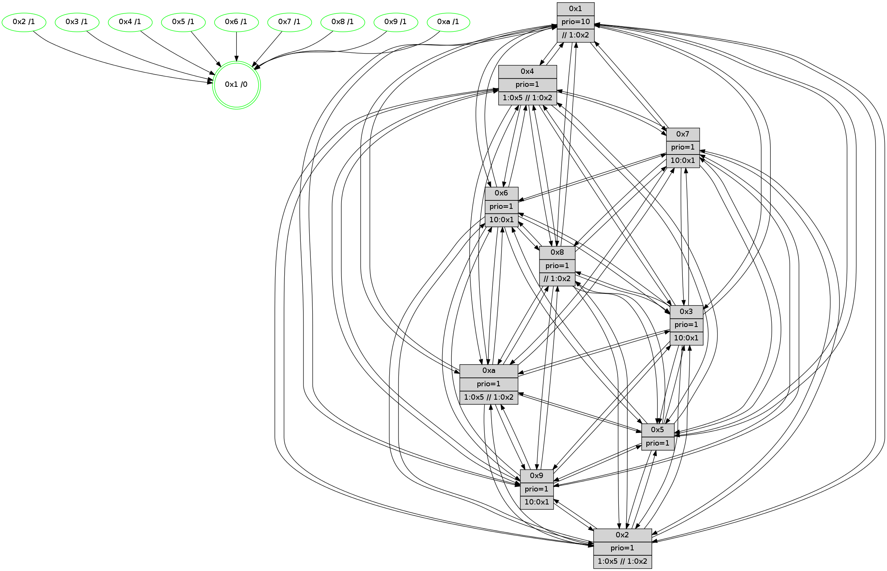

>> << IDX [start] -100 -25 -5 +0 +5 +25 +100 [655.365430117]
 Previous packets
----------------------------------------------------------------------
650.636645 beacon01(faad) #0 coord=01,02,03,04,05,06,07,0a,09,08 cycle=688.0ms assoc
-- color-indic=1 64 1d 37
650.646627 beacon02(faad) #0 coord=01,02,03,04,05,06,07,0a,09,08 cycle=688.0ms assoc 64 8e 06
650.656627 beacon03(faad) #0 coord=01,02,03,04,05,06,07,0a,09,08 cycle=688.0ms assoc 64 f4 4b
650.666627 beacon04(faad) #0 coord=01,02,03,04,05,06,07,0a,09,08 cycle=688.0ms assoc 64 83 a1
650.676628 beacon05(faad) #0 coord=01,02,03,04,05,06,07,0a,09,08 cycle=688.0ms assoc 64 f9 ec
650.686628 beacon06(faad) #0 coord=01,02,03,04,05,06,07,0a,09,08 cycle=688.0ms assoc 64 77 3b
650.696629 beacon07(faad) #0 coord=01,02,03,04,05,06,07,0a,09,08 cycle=688.0ms assoc 64 0d 76
650.706632 beacon0a(faad) #0 coord=01,02,03,04,05,06,07,0a,09,08 cycle=688.0ms assoc 64 7c 7d
650.716634 beacon09(faad) #0 coord=01,02,03,04,05,06,07,0a,09,08 cycle=688.0ms assoc 64 f2 aa
650.726634 beacon08(faad) #0 coord=01,02,03,04,05,06,07,0a,09,08 cycle=688.0ms assoc 64 88 e7
650.738467 [Hello(8): seq=361 sym=5,2,3,4,7,6,9,10,1 sysInfo=hasWarning,coloring-mode-on,ColoringModeIndicationCalled stat=5:4,5,0,6/2:11,12,7,1/3:13,6,14,8/4:0,2,2,6/7:10,15,2,5/6:5,1,14,6/9:13,13,1,5/10:9,5,0,6/1:11,9,0,0]
650.743116 [Hello(10): seq=350 sym=6,2,3,8,9,5,7,4,1 sysInfo= stat=6:12,1,3,1/2:8,12,8,1/3:1,3,7,3/8:13,3,14,6/9:12,14,11,4/5:15,7,12,7/7:3,0,15,2/4:10,3,10,6/1:7,4,15,1]
650.746271 [Color(4) seq=61 @0:0 prio=1 >1.@5 >>1.@2,1.@3,1.@5]
650.748118 [Hello(2): seq=414 sym=4,5,7,6,3,9,8,10,1 sysInfo=hasWarning stat=4:6,4,15,4/5:14,8,11,6/7:7,6,3,3/6:14,14,1,4/3:14,15,12,1/9:2,11,12,1/8:9,3,10,4/10:7,2,13,4/1:3,14,9,1]
650.751369 [Hello(5): seq=418 sym=7,6,4,3,1,9,8,10,2 sysInfo= stat=7:1,11,3,3/6:4,12,2,5/4:10,2,13,5/3:7,1,11,4/1:4,7,14,1/9:4,3,15,3/8:3,10,10,4/10:2,12,1,5/2:1,9,0,4]
650.753918 [Hello(9): seq=361 sym=5,2,3,4,7,6,8,10,1 sysInfo=hasWarning stat=5:9,7,15,8/2:12,0,4,5/3:11,12,12,6/4:13,12,14,5/7:8,15,4,3/6:0,8,0,5/8:15,14,5,2/10:1,8,2,7/1:1,2,0,1]
650.757596 [Color(2) seq=63 @0:0 prio=1 >1.@5]
650.758960 [Color(9) seq=66 @0:0 prio=1 >10.@1,1.@2,1.@3,1.@5]
650.760707 [Color(5) seq=71 @0:0 prio=1]
----------------------------------------------------------------------
651.424775 beacon01(faad) #0 coord=01,02,03,04,05,06,07,0a,09,08 cycle=688.0ms assoc
-- color-indic=1 64 29 2f
651.444758 beacon03(faad) #0 coord=01,02,03,04,05,06,07,0a,09,08 cycle=688.0ms assoc 64 c0 53
651.454759 beacon04(faad) #0 coord=01,02,03,04,05,06,07,0a,09,08 cycle=688.0ms assoc 64 b7 b9
651.464758 beacon05(faad) #0 coord=01,02,03,04,05,06,07,0a,09,08 cycle=688.0ms assoc 64 cd f4
651.474759 beacon06(faad) #0 coord=01,02,03,04,05,06,07,0a,09,08 cycle=688.0ms assoc 64 43 23
651.484759 beacon07(faad) #0 coord=01,02,03,04,05,06,07,0a,09,08 cycle=688.0ms assoc 64 39 6e
651.494764 beacon0a(faad) #0 coord=01,02,03,04,05,06,07,0a,09,08 cycle=688.0ms assoc 64 48 65
651.504764 beacon09(faad) #0 coord=01,02,03,04,05,06,07,0a,09,08 cycle=688.0ms assoc 64 c6 b2
651.514766 beacon08(faad) #0 coord=01,02,03,04,05,06,07,0a,09,08 cycle=688.0ms assoc 64 bc ff
651.525992 [Hello(1): seq=327 sym=4,2,9,5,10,3,8,6,7 sysInfo=coloring-mode-on,ColoringModeRequestCalled stat=4:6,6,2,0/2:0,4,7,8/9:3,6,0,0/5:13,1,8,9/10:11,6,9,7/3:15,8,13,9/8:5,0,11,6/6:0,3,8,5/7:2,8,12,7]
651.528980 [Hello(6): seq=418 sym=2,3,5,4,7,9,8,10,1 sysInfo= stat=2:13,14,8,6/3:0,7,3,6/5:9,12,1,8/4:2,4,1,0/7:10,4,3,1/9:14,10,2,6/8:6,13,1,5/10:10,13,8,6/1:3,2,11,1]
651.531704 [Hello(3): seq=418 sym=1,7,6,2,4,8,9,10,5 sysInfo= stat=1:6,14,0,1/7:0,4,15,3/6:8,12,12,6/2:3,6,14,7/4:4,0,15,4/8:12,4,12,2/9:15,1,2,6/10:1,13,14,5/5:0,5,0,6]
651.534694 [STC(1) #0.50 tree-change,inconsistent-stability,stable,to-color d=0]
651.536812 [Color(8) seq=98 @0:0 prio=1 >>1.@2,1.@3,1.@5]
651.540178 [Hello(7): seq=418 sym=2,3,5,6,4,8,9,10,1 sysInfo=hasWarning stat=2:7,8,8,9/3:12,6,4,8/5:8,14,3,10/6:0,13,3,1/4:13,7,5,6/8:15,7,6,4/9:11,8,3,8/10:8,13,6,7/1:8,0,15,1]
651.543014 [Hello(4): seq=418 sym=5,7,6,2,3,9,8,10,1 sysInfo= stat=5:12,14,15,6/7:8,8,2,2/6:1,14,3,6/2:3,2,13,6/3:12,13,11,4/9:11,6,14,3/8:3,13,1,7/10:14,13,2,6/1:0,1,15,1]
651.545677 [Color(10) seq=76 @0:0 prio=1 >1.@5 >>1.@2,1.@3,1.@5]
----------------------------------------------------------------------
652.212906 beacon01(faad) #0 coord=01,02,03,04,05,06,07,0a,09,08 cycle=688.0ms assoc
-- color-indic=1 64 95 2a
652.222889 beacon02(faad) #0 coord=01,02,03,04,05,06,07,0a,09,08 cycle=688.0ms assoc 64 06 1b
652.232888 beacon03(faad) #0 coord=01,02,03,04,05,06,07,0a,09,08 cycle=688.0ms assoc 64 7c 56
652.242889 beacon04(faad) #0 coord=01,02,03,04,05,06,07,0a,09,08 cycle=688.0ms assoc 64 0b bc
652.252889 beacon05(faad) #0 coord=01,02,03,04,05,06,07,0a,09,08 cycle=688.0ms assoc 64 71 f1
652.262889 beacon06(faad) #0 coord=01,02,03,04,05,06,07,0a,09,08 cycle=688.0ms assoc 64 ff 26
652.272888 beacon07(faad) #0 coord=01,02,03,04,05,06,07,0a,09,08 cycle=688.0ms assoc 64 85 6b
652.282893 beacon0a(faad) #0 coord=01,02,03,04,05,06,07,0a,09,08 cycle=688.0ms assoc 64 f4 60
652.292896 beacon09(faad) #0 coord=01,02,03,04,05,06,07,0a,09,08 cycle=688.0ms assoc 64 7a b7
652.302895 beacon08(faad) #0 coord=01,02,03,04,05,06,07,0a,09,08 cycle=688.0ms assoc 64 00 fa
652.316024 [Hello(10): seq=351 sym=6,2,3,8,9,5,7,4,1 sysInfo= stat=6:13,1,3,1/2:9,13,8,1/3:1,3,7,3/8:13,3,14,6/9:13,15,11,4/5:0,8,12,7/7:3,0,15,2/4:10,4,10,6/1:8,4,15,1]
652.318766 [Hello(9): seq=362 sym=5,2,3,4,7,6,8,10,1 sysInfo=hasWarning stat=5:9,8,15,8/2:12,0,4,5/3:12,12,12,6/4:14,12,14,5/7:9,15,4,3/6:1,8,0,5/8:0,15,5,2/10:1,9,2,7/1:2,2,1,1]
652.321262 [Hello(2): seq=415 sym=4,5,7,6,3,9,8,10,1 sysInfo=hasWarning stat=4:7,4,15,4/5:14,9,11,6/7:8,7,3,3/6:15,14,1,4/3:15,15,12,1/9:2,12,12,1/8:10,4,10,4/10:7,3,13,4/1:4,14,10,1]
652.324454 [STC(3)->1 #0.50 tree-change,inconsistent-stability,stable,to-color d=1]
652.325964 [Hello(5): seq=419 sym=7,6,4,3,1,9,8,10,2 sysInfo= stat=7:2,11,3,3/6:5,12,2,5/4:11,2,13,5/3:8,1,11,4/1:5,7,15,1/9:4,3,15,3/8:4,11,10,4/10:2,13,1,5/2:1,9,0,4]
652.328417 [Color(4) seq=62 @0:0 prio=1 >1.@5 >>1.@2,1.@3,1.@5]
652.330099 [STC(2)->1 #0.50 tree-change,inconsistent-stability,stable,to-color d=1]
652.331696 [STC(5)->1 #0.50 tree-change,inconsistent-stability,stable,to-color d=1]
652.333086 [Color(3) seq=83 @0:0 prio=1 >10.@1,1.@2,1.@5,1.@8]
652.335695 [Color(5) seq=72 @0:0 prio=1]
652.337059 [Color(1) seq=99 @0:0 prio=10 >>1.@2,1.@3,1.@5]
652.341616 [Color(2) seq=64 @0:0 prio=1 >1.@5 >>1.@2,1.@3,1.@5]
652.344837 [STC(9)->1 #0.50 tree-change,inconsistent-stability,stable,to-color d=1]
652.347746 [Color(9) seq=67 @0:0 prio=1 >10.@1,1.@2,1.@3,1.@5]
652.354923 [Color(6) seq=88 @0:0 prio=1 >10.@1,1.@2,1.@3,1.@5]
----------------------------------------------------------------------
653.001037 beacon01(faad) #0 coord=01,02,03,04,05,06,07,0a,09,08 cycle=688.0ms assoc
-- color-indic=1 64 51 24
653.011020 beacon02(faad) #0 coord=01,02,03,04,05,06,07,0a,09,08 cycle=688.0ms assoc 64 c2 15
653.021019 beacon03(faad) #0 coord=01,02,03,04,05,06,07,0a,09,08 cycle=688.0ms assoc 64 b8 58
653.031020 beacon04(faad) #0 coord=01,02,03,04,05,06,07,0a,09,08 cycle=688.0ms assoc 64 cf b2
653.041020 beacon05(faad) #0 coord=01,02,03,04,05,06,07,0a,09,08 cycle=688.0ms assoc 64 b5 ff
653.051019 beacon06(faad) #0 coord=01,02,03,04,05,06,07,0a,09,08 cycle=688.0ms assoc 64 3b 28
653.061021 beacon07(faad) #0 coord=01,02,03,04,05,06,07,0a,09,08 cycle=688.0ms assoc 64 41 65
653.071028 beacon0a(faad) #0 coord=01,02,03,04,05,06,07,0a,09,08 cycle=688.0ms assoc 64 30 6e
653.081008 beacon09(faad) #0 coord=01,02,03,04,05,06,07,0a,09,08 cycle=688.0ms assoc 64 be b9
653.091025 beacon08(faad) #0 coord=01,02,03,04,05,06,07,0a,09,08 cycle=688.0ms assoc 64 c4 f4
653.102243 [Hello(7): seq=419 sym=2,3,5,6,4,8,9,10,1 sysInfo=hasWarning stat=2:7,9,8,9/3:12,6,4,8/5:8,14,3,10/6:0,14,3,1/4:14,7,5,6/8:15,7,6,4/9:11,9,4,8/10:9,14,6,7/1:8,0,15,1]
653.105273 [Hello(3): seq=419 sym=1,7,6,2,4,8,9,10,5 sysInfo= stat=1:6,15,1,1/7:1,4,15,3/6:8,13,13,6/2:3,7,14,7/4:5,0,15,4/8:12,5,12,2/9:15,2,3,6/10:2,14,14,5/5:0,6,0,6]
653.108451 [Color(8) seq=99 @0:0 prio=1 >>1.@2,1.@3,1.@5]
653.110007 [Color(10) seq=77 @0:0 prio=1 >1.@5 >>1.@2,1.@3,1.@5]
653.115634 [Hello(4): seq=419 sym=5,7,6,2,3,9,8,10,1 sysInfo= stat=5:12,15,0,6/7:8,8,2,2/6:1,15,4,6/2:3,3,14,6/3:12,14,11,4/9:11,7,15,3/8:3,13,1,7/10:15,14,2,6/1:0,2,15,1]
653.123132 [Hello(1): seq=328 sym=4,2,9,5,10,3,8,6,7 sysInfo=coloring-mode-on,ColoringModeRequestCalled stat=4:7,6,2,0/2:0,5,7,8/9:3,7,1,0/5:13,1,8,9/10:12,7,9,7/3:15,8,13,9/8:5,1,11,6/6:0,4,8,5/7:3,8,12,7]
----------------------------------------------------------------------
653.789168 beacon01(faad) #0 coord=01,02,03,04,05,06,07,0a,09,08 cycle=688.0ms assoc
-- color-indic=1 64 ed 21
653.799151 beacon02(faad) #0 coord=01,02,03,04,05,06,07,0a,09,08 cycle=688.0ms assoc 64 7e 10
653.809150 beacon03(faad) #0 coord=01,02,03,04,05,06,07,0a,09,08 cycle=688.0ms assoc 64 04 5d
653.819152 beacon04(faad) #0 coord=01,02,03,04,05,06,07,0a,09,08 cycle=688.0ms assoc 64 73 b7
653.829151 beacon05(faad) #0 coord=01,02,03,04,05,06,07,0a,09,08 cycle=688.0ms assoc 64 09 fa
653.839151 beacon06(faad) #0 coord=01,02,03,04,05,06,07,0a,09,08 cycle=688.0ms assoc 64 87 2d
653.849152 beacon07(faad) #0 coord=01,02,03,04,05,06,07,0a,09,08 cycle=688.0ms assoc 64 fd 60
653.859155 beacon0a(faad) #0 coord=01,02,03,04,05,06,07,0a,09,08 cycle=688.0ms assoc 64 8c 6b
653.869156 beacon09(faad) #0 coord=01,02,03,04,05,06,07,0a,09,08 cycle=688.0ms assoc 64 02 bc
653.879156 beacon08(faad) #0 coord=01,02,03,04,05,06,07,0a,09,08 cycle=688.0ms assoc 64 78 f1
653.892303 [Hello(10): seq=352 sym=6,2,3,8,9,5,7,4,1 sysInfo= stat=6:13,2,3,1/2:10,14,9,1/3:1,4,8,3/8:13,3,14,6/9:14,0,12,4/5:1,9,13,7/7:4,1,15,2/4:11,5,10,6/1:9,5,15,1]
653.897825 [Color(9) seq=68 @0:0 prio=1 >10.@1,1.@2,1.@3,1.@5]
653.899964 [Color(7) seq=72 @0:0 prio=1 >10.@1,1.@2,1.@3,1.@5]
653.902612 [Hello(5): seq=420 sym=7,6,4,3,1,9,8,10,2 sysInfo= stat=7:3,11,3,3/6:5,13,2,5/4:12,3,13,5/3:9,1,11,4/1:6,8,15,1/9:4,4,0,3/8:4,12,10,4/10:2,14,1,5/2:1,10,0,4]
653.905206 [Hello(2): seq=416 sym=4,5,7,6,3,9,8,10,1 sysInfo=hasWarning stat=4:8,4,15,4/5:14,9,11,6/7:9,7,3,3/6:15,15,1,4/3:0,15,12,1/9:2,13,13,1/8:10,5,10,4/10:8,4,13,4/1:5,14,10,1]
653.907736 [Color(3) seq=84 @0:0 prio=1 >10.@1,1.@2,1.@5,1.@8]
653.909391 [Color(5) seq=73 @0:0 prio=1]
653.912127 [Color(2) seq=65 @0:0 prio=1 >1.@5 >>1.@2,1.@3,1.@5]
653.915122 [Color(1) seq=100 @0:0 prio=10 >>1.@2,1.@3,1.@5]
----------------------------------------------------------------------
654.577300 beacon01(faad) #0 coord=01,02,03,04,05,06,07,0a,09,08 cycle=688.0ms assoc
-- color-indic=1 64 f9 4f
654.587282 beacon02(faad) #0 coord=01,02,03,04,05,06,07,0a,09,08 cycle=688.0ms assoc 64 6a 7e
654.597283 beacon03(faad) #0 coord=01,02,03,04,05,06,07,0a,09,08 cycle=688.0ms assoc 64 10 33
654.617282 beacon05(faad) #0 coord=01,02,03,04,05,06,07,0a,09,08 cycle=688.0ms assoc 64 1d 94
654.627282 beacon06(faad) #0 coord=01,02,03,04,05,06,07,0a,09,08 cycle=688.0ms assoc 64 93 43
654.637284 beacon07(faad) #0 coord=01,02,03,04,05,06,07,0a,09,08 cycle=688.0ms assoc 64 e9 0e
654.647288 beacon0a(faad) #0 coord=01,02,03,04,05,06,07,0a,09,08 cycle=688.0ms assoc 64 98 05
654.657288 beacon09(faad) #0 coord=01,02,03,04,05,06,07,0a,09,08 cycle=688.0ms assoc 64 16 d2
654.667290 beacon08(faad) #0 coord=01,02,03,04,05,06,07,0a,09,08 cycle=688.0ms assoc 64 6c 9f
654.678833 [Hello(4): seq=420 sym=5,7,6,2,3,9,8,10,1 sysInfo= stat=5:13,0,0,6/7:8,9,2,2/6:1,15,4,6/2:4,4,14,6/3:12,15,11,4/9:11,8,15,3/8:3,13,1,7/10:0,14,2,6/1:1,3,15,1]
654.682204 [Hello(1): seq=329 sym=4,2,9,5,10,3,8,6,7 sysInfo=coloring-mode-on,ColoringModeRequestCalled stat=4:7,6,2,0/2:0,5,7,8/9:3,7,1,0/5:13,1,8,9/10:13,7,9,7/3:15,8,13,9/8:5,1,11,6/6:0,4,8,5/7:3,8,12,7]
654.684711 [Hello(6): seq=420 sym=2,3,5,4,7,9,8,10,1 sysInfo= stat=2:14,15,8,6/3:2,8,3,6/5:10,13,1,8/4:4,4,1,0/7:11,5,3,1/9:14,11,2,6/8:7,15,1,5/10:11,15,8,6/1:4,3,12,1]
654.687729 [Color(10) seq=78 @0:0 prio=1 >1.@5 >>1.@2,1.@3,1.@5]
654.690298 [Hello(3): seq=420 sym=1,7,6,2,4,8,9,10,5 sysInfo= stat=1:7,0,1,1/7:1,4,15,3/6:8,13,13,6/2:3,8,14,7/4:6,0,15,4/8:12,6,12,2/9:15,2,3,6/10:2,15,14,5/5:0,7,0,6]
654.693040 [Color(8) seq=100 @0:0 prio=1 >>1.@2,1.@3,1.@5]
654.696495 [Hello(7): seq=420 sym=2,3,5,6,4,8,9,10,1 sysInfo=hasWarning stat=2:8,10,8,9/3:13,7,4,8/5:9,15,3,10/6:0,14,3,1/4:15,7,5,6/8:15,8,6,4/9:11,9,4,8/10:10,15,6,7/1:9,1,15,1]